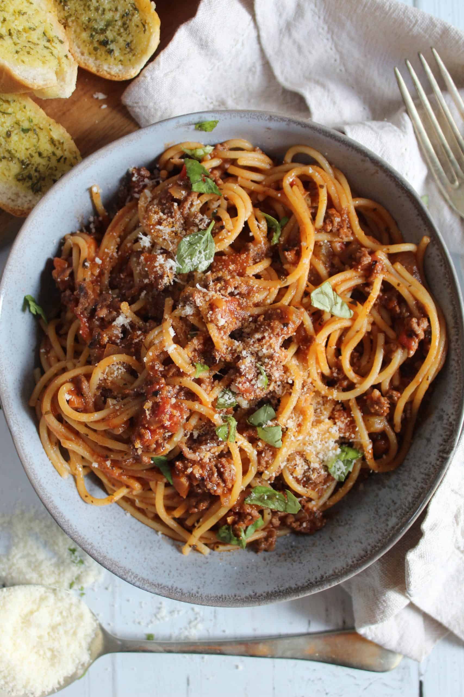

Wormy Bolognese

Description
Sometimes you just cannot beat an absolute classic - and this gluten free spaghetti bolognese recipe is just that!
Looking deliciously wormy 'n spooky, this recipe is just a perfect and easy dinner idea!
It's super tasty and you'll want to keep making it over and over again.
Ingredients
- 500 g gluten-free spaghetti
- 2 tbsp virgin olive oil
- 2 medium white onions (peeled and finely chopped)
- 3 garlic cloves (peeled and crushed)
- 2 celery sticks + 1 carrot (finely chopped)
- 500 g beef mince
- 2 tbsp dried basil + 1 tbsp dried oregano
- 400 g tinned chopped tomatoes
- 300 ml passata
- 125 ml red wine
- 1 Knorr beef stock pot (or equivalent gluten free beef stock cube)
- 2 tbsp tomato puree
- 1 tbsp fresh basil leaves
- 2 tbsp grated parmesan
Steps
- Add 1 tbsp of olive oil to a large, non-stick lidded pan and heat on a low heat. Add the onions, celery, carrots and garlic and fry for 5-7 minutes until they soften and the onions begin to go translucent. You'll want to stir them occasionally during this time.
- Add the second tablespoon of oil to the pan, along with the dried basil and oregano. Stir so the herbs are evenly mixed then turn the heat up to a medium-to-high heat.
- Once the pan is sizzling, add the beef mince and use a wooden or silicone spatula/spoon to break it up in the pan. Keep stirring and breaking the mince up until it is all brown and there are no pink bits left (approx another 4-5 minutes).
- Next add the tinned tomatoes, passata, red wine, tomato puree and Knorr stock pot to the pan. Stir the mix through to ensure it's completely mixed and bring to the boil.
- Once bubbling, turn the heat right down to low, pop a lid on, and leave to simmer for 45 minutes. Keep stirring occasionally during this time, to ensure it's not sticking. You want it to be bubbling gently, so if it starts to boil furiously then turn the heat down some more.
- When the sauce has around 15-20 minutes left, bring some water to the boil in a separate pan. Salt the water and add a drop of olive oil, and then cook the gluten free spaghetti as per the pack instructions (usually around 10 minutes).
- BEFORE draining the pasta, scoop approx 2 tbsp of the pasta water from the pan and reserve (see notes). Drain the spaghetti.
- Once the bolognese sauce is cooked, add the spaghetti + the reserved pasta water to the sauce. Stir through using a pasta serve or tongs to ensure the sauce is mixed well and all of the spaghetti is coated.
- Serve in pasta bowls and sprinkle with torn fresh basil and grated parmesan to taste.